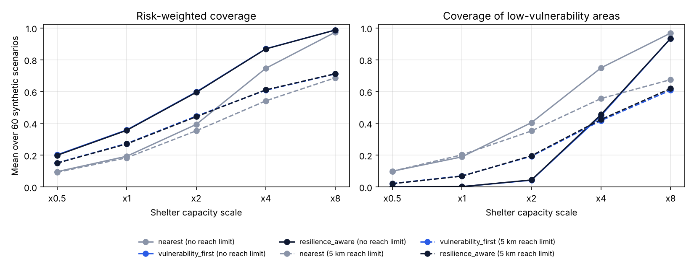

Simulation · Heatwaves
When cooling centres fit a fifth of the people, the rule only decides who gets in
Three allocation rules, 60 synthetic city scenarios, and a stress test from a severe shortage of places to a surplus.
By Muzammal Hussain · 10 November 2026 · 5 min read
In a Pakistani heatwave, cooling centres often lose power and water at the same time the heat peaks, so they can take fewer people than planned. I built a small simulator to ask a narrow question: when places are short, how do different allocation rules share them, and what does each rule cost? Everything here is synthetic. No real neighbourhood, shelter or city is modelled.
Key findings
- At the default setting the usable places covered about 20% of demand. All three rules filled every place, so overall coverage was the same (19.8%). The rule only changed who got in.
- Serving the most heat-exposed and vulnerable neighbourhoods first raised risk-weighted coverage from 0.193 to 0.358 (difference 0.166, 95% CI 0.150 to 0.180).
- The cost: coverage of low-vulnerability neighbourhoods fell from 18.9% to 0.2%.
- Ranking shelters by power and water reliability changed nothing while places were scarce. Only with a surplus of places did it help, and only slightly (+0.007).
- With a 5 km reach limit, even eight times the capacity served only about 69% of demand. Distance, not capacity, became the limit.
How the simulator works
Each of 60 scenarios (seed 17) has 35 neighbourhoods and 9 shelters placed in a 20 km by 20 km square. Every neighbourhood has a demand, a heat-exposure score, a social-vulnerability score and two access barriers (mobility and women's safe access). Every shelter has a capacity and power and water reliability. One grid shock and one water shock per scenario lower all shelters together, and a shelter's usable places are its capacity times its power and water reliability.
Three rules share the places:
- Nearest: neighbourhoods in a fixed order, each sent to the closest shelter with space.
- Vulnerability first: neighbourhoods with the highest heat exposure times vulnerability go first.
- Reliability aware: the same order with a mobility weight, and shelters ranked by power, water and safe-access reliability as well as distance.
Then I stretched two things: shelter capacity from half to eight times the default, and a reach limit of none or 5 km. All rules ran on the same scenarios, so each difference is paired by scenario, with a 95% bootstrap interval over the 60 scenarios.
Results
| Setting | Places / demand | Rule | Risk-weighted coverage | Low-vulnerability coverage | Service reliability |
|---|---|---|---|---|---|
| x1, no limit | 0.20 | Nearest | 0.193 | 0.189 | 0.590 |
| Vulnerability first | 0.358 | 0.002 | 0.590 | ||
| Reliability aware | 0.356 | 0.002 | 0.590 | ||
| x8, no limit | 1.58 | Nearest | 0.974 | 0.968 | 0.581 |
| Reliability aware | 0.987 | 0.935 | 0.588 | ||
| x8, 5 km limit | 1.58 | Nearest | 0.687 | 0.675 | 0.576 |
| Reliability aware | 0.712 | 0.619 | 0.583 |

What I noticed
- Under a shortage, "who goes first" is the whole decision. The priority rule does help the most vulnerable areas, but it does so by moving almost all places away from everyone else. That is a policy choice, not a free improvement, and a report should show both numbers.
- The reliability score of the places used did not move at all at x1, because every shelter was full under every rule. A smarter shelter ranking cannot help when there is no spare place to choose. It only matters once there is a surplus.
- The reach limit mattered more than I expected. With places for 158% of demand, a 5 km limit still left about a third of demand unserved, because shelters were not where the people were.
Limitations
- All data are synthetic and not calibrated to any census, utility or health record.
- Straight-line distance ignores roads, transport and the walk in the heat.
- Demand is not a forecast of who would actually come, and no health outcome is simulated.
- Weights, thresholds and the single safe-access score are my design choices and would need checking with people who run heat response in Pakistan.
- The rules are simple greedy heuristics, not optimal allocations.
Reproduce the analysis
The repository has the simulator, the three rules, the stress sweep and 13 tests. On a Mac with Python 3.9, python -m heatbridge_pk.cli analyze reproduces every number and the figure above in a few seconds.
Context: Urban Unit, Government of Punjab (2025), Heatwave Management Plan of Lahore (2025-2028). Latif, Ahsaan and Latif (2025), Heatwaves and water scarcity in Pakistan, BMJ Global Health 10(12), e020980.